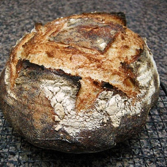

Bread
Levain
1 tbsp Sourdough Starter
200g flour
200g water
Dough
200g levain, 20% of flour
750g water, Lukewarm
900g bread flour
100g whole grain flour
20g salt
MAKE LEVAIN (EVENING BEFORE: 5 MINUTES)
On the night before baking, add one tablespoon of sourdough starter to a container
Mix with the flour and water
Let the mixture sit on the counter overnight for about 12 hours
HYDRATE DOUGH (NEXT MORNING: 45 MINUTES)
Check that the Levain is ready which will be when a small amount floats in water
Combine the larger portion of water into a large mixing bowl with the Leven and mix to disperse
Add flour and remaining ingredients and mix to combine and let this mixture rest for ~45 minutes
optionally: just mix everything together at once before letting it rest for 45 minutes
BULK RISE: STRETCH AND FOLDS (MORNING: 2 HOURS)
note maintain 78F-82F temperature by storing the dough in the small oven if the house is too cold
Do a total of 4 stretches and folds every 30 minutes for the first two hours
BULK RISE: REST DOUGH (MORNING: 2 HOURS)
Let the dough rest for the remaining two hours
The dough should release from the bowl and have grown 20-30% when it is ready
BENCH SHAPING (AFTERNOON: 30-60 MINUTES)
Lightly flour the outside of the dough and then cut the dough into sizes for baking
Lightly flour the remaining exposed dough and then work the dough into taunt balls
Cover and let dough balls rest for 30 minutes
If the dough turns into a flat pancake dripping too much, repeat the shaping step to build more strength
FINAL SHAPING (AFTERNOON: 10 MINUTES)
Lightly flour dough on top surfaces and flip the dough so the top rests on work surface. Take care to not deflate the dough to preserve oven spring. We are making a series of folds to create tension in the dough
Create a neat package by folding the 1/3 dough closest to you over the middle of the round, stretch out dough horizontally to your right and fold this over the center, and stretch out dough horizontally to your left and fold this over the center. Stretch out the third of the dough farthest from you and fold this flap toward you, over the previous folds. Grab the dough nearest to you and wrap it over while rolling the whole package away from you so that the smooth underside of the loaf is now the top and all the seams are on the bottom
Cup your hands and pull the dough toward you to tighten the tension
Line the shaping bowl with flour and gently place bowl seam side up into proofing
bowls. Pinch the loaf shut if needed to increase tension.
Final Rise (Late Afternoon/Next Morning: 2-48 hours)
After 2 hours you would get a mild tasting bread and the longer the dough sits the more
acidic it would be
Put in fridge to cold ferment for up to 48 hours (16-18 is ideal) to maximize complexity and slightly more acidic flavor
BAKE (LATE AFTERNOON/NEXT MORNING (1 HOUR)
Preheat larger oven to 500 degrees with dutch oven inside 20 minutes before you are ready to bake. Place a rack in the middle with pizza steal between dutch oven and heating element.
Take dough out of refrigerator and place dough in preheated dutch oven
Add rice flour, score surface of dough, and replace dutch oven cover before placing into the oven
Reduce oven temperature to 450F and bake for 20 minutes
Remove dutch oven cover and then bake for another 20 minutes (optionally check after 15 minutes if you want a softer crust)
Check exterior color and then remove from oven and cool on rack. If the loaf doesn’t appear dark enough leave it in the oven after turning it off with the door open but check on it every five minutes.
75% hydration dough